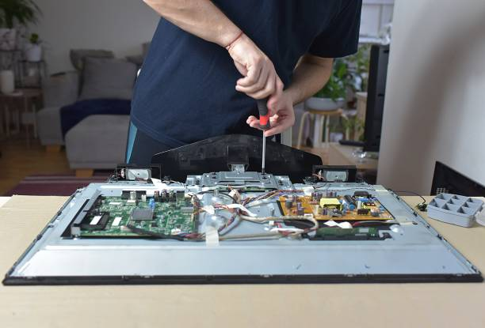

A blank screen or fuzzy display turns family movie night into a headache. Savera Services provides expert TV repair in Kothrud, covering homes and offices near Paud Road, Karve Road and Mayur Colony. Our technicians fix no-picture issues, backlight failure, sound problems, motherboard faults, and smart TV software glitches for brands like Sony, Samsung, LG, Mi, OnePlus and Philips. We use genuine parts, offer a 30-day warranty, and complete most repairs on the spot. Book Savera Services for reliable TV repair across Kothrud with honest pricing and fast doorstep service.
From LED and LCD to smart and plasma models, our Kothrud technicians diagnose screen, sound, and connectivity issues quickly and repair them with quality parts.


Assured saving on every TV service order

Flat discount on your first service in Kothrud

New deals every day across all services

Advance needed only if spare parts are required
Your TV is your window to entertainment and news, so when it fails you want it fixed fast. Savera Services repairs all major TV brands across Kothrud, Paud Road and Karve Road - from backlight replacement to motherboard repair.
We carry common spares and use anti-static tools for safe handling. Every repair is backed by a 30-day warranty, so you can relax near Mayur Colony while we restore your screen.
Service charges start from – ₹399/-
Note: Repair prices may vary based on tv condition, brand, and distance from Kothrud.
Ensure proper ventilation behind the TV to prevent overheating. Regular professional care keeps your tv efficient and safe. Savera Services serves all of Kothrud with expert technicians.
Keep your TV away from direct sunlight and moisture to protect the panel. Regular professional care keeps your tv efficient and safe. Savera Services serves all of Kothrud with expert technicians.
Use a voltage stabilizer to guard against power surges and voltage fluctuations. Regular professional care keeps your tv efficient and safe. Savera Services serves all of Kothrud with expert technicians.
Clean the screen with a soft microfiber cloth only - avoid harsh liquids. Regular professional care keeps your tv efficient and safe. Savera Services serves all of Kothrud with expert technicians.
Update smart TV software regularly to keep apps and features working smoothly. Regular professional care keeps your tv efficient and safe. Savera Services serves all of Kothrud with expert technicians.
It may be due to outdated software or Wi-Fi issues. We handle firmware upgrades, Wi-Fi module repairs, and software fixes.
Yes. Every TV repair includes a 30-day service warranty on labour and replaced parts.
Yes. We provide secure wall mounting, reinstallation, and alignment for all TV sizes.
We confirm bookings within 30 minutes, and same-day visits are available across Paud Road and Karve Road.
Lines often indicate panel or ribbon cable issues, while spots may be dead pixels. We diagnose and recommend the best fix.
Yes. We provide fast TV repair and service across Kothrud, Paud Road and Karve Road with trained technicians.
We service Sony, Samsung, LG, Panasonic, Mi, OnePlus, Philips, Motorola, Vu and more.
This is usually a backlight or display panel issue. Our technicians can replace backlights or repair the panel as needed.
TV panels are delicate, so repairs need experience and the right tools. Savera Services sends verified technicians across Kothrud, Paud Road, Karve Road and Mayur Colony who handle screen, backlight, motherboard, and smart TV issues carefully. Every job includes transparent pricing and warranty-backed workmanship.
Trusted Customers
Happy with our service
Savera Services is a locally trusted provider of tv services in Kothrud, Pune. We serve homes, apartments, retail shops, and offices near Paud Road, Karve Road and Mayur Colony. From a quick check-up to a complete repair, our technicians bring the right tools and genuine spares to your doorstep with transparent pricing.
We provide tv services across Kothrud and its nearby localities including:
TV trouble in Kothrud? Call Savera Services now. We provide same-day TV repair across Paud Road, Karve Road, Mayur Colony and all of Kothrud with genuine parts and a 30-day warranty.